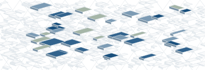
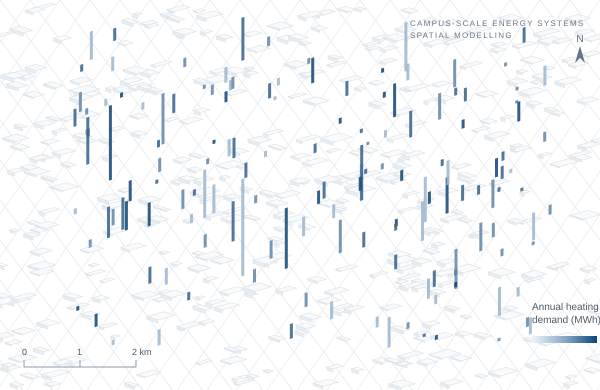
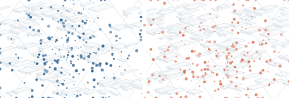
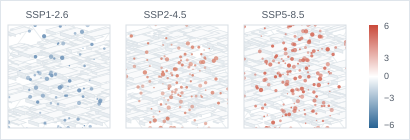

01
Campus-scale BTES potential
Assessing the technical potential and spatial constraints of borehole thermal energy storage in campuses and cities.

I explore how underground thermal resources and urban energy systems can support sustainable, resilient and low-carbon cities through spatial modelling and data-driven analysis.

Assessing the technical potential and spatial constraints of borehole thermal energy storage in campuses and cities.

Spatial allocation and matching of thermal supply and demand using GIS and data-driven methods.

Evaluating the role of subsurface thermal storage in low-carbon and climate-resilient urban energy systems.

Hohai University
Université de Lille
Hohai University